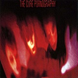
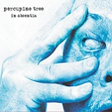
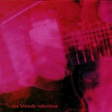
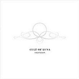
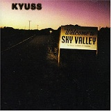
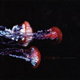
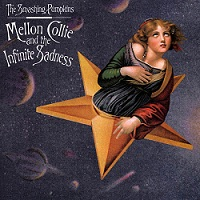

Como viene siendo tradición, desde SuicideByStar queremos ofreceros un aporte especial en conmemoración de nuestro quinto cumpleaños. Como habréis podido comprobar si sois seguidores habituales de la web, este quinto año ha sido clave en nuestro blog. Éste ha sido el año en el que hemos crecido y madurado en este proyecto de renovación y metamorfosis, que nos ha permitido evolucionar para llegar a ser un portal que ofrece de una forma integral todo lo relacionado con la música alternativa. La agenda de conciertos, la incursión hacia las redes sociales, la apertura del foro a todos los internautas (alma y sala de estar para nuestra comunidad), la mejora continua del entorno web, y la nueva sección de noticias, unidas a nuestras tradicionales reseñas sólo son una parte primigenia de lo que queremos que Suicide By Star llegue a ser en el futuro. Pero para esto necesitamos tiempo, trabajo, esfuerzo, y especialmente el quórum de esto: vosotros. Todos aquellos que nos seguís en facebook y twitter, los que os pasáis por el foro (aunque solo sea a cotillear), los que nos leéis, los que nos comentáis; sois la savia verde de este ente. Un millón de gracias por seguir ahí y hacer mantener a flote este barco.
Y por último, nuestro regalo de cumpleaños. A raíz de una propuesta sacada de nuestro foro, hemos creado una lista de los discos “más ricos” votados por foreros y staff. Una lista de imprescindibles que deberían estar en vuestras colecciones y que forman parte del sustrato musical más arraigado en nuestra comunidad. Este especial tendrá varias entregas, en las que iremos analizando brevemente los discos hasta llegar a los 54. Esperemos que os sintáis identificados, o que incluso todavía podáis llegar a descubrir algún diamante oculto. Vamos con los primeros 18 discos:
—————————————————————————
54. The Cure – Pornography
 Nos encontramos con una banda de la que es muy difícil elegir un único disco dentro de una dilatada carrera que ha tenido tantos vaivenes. Es complicado simplemente elegir entre los inicios oscuros de la banda, o sus discos pop mucho más inocentes. Curiosamente, nuestros foreros han decidido que el disco de The Cure destinado a aparecer en esta lista sea el que quizás sea el trabajo más oscuro de la banda. Las 8 canciones que componen Pornography suponen un auténtico viaje tortuoso y depresivo para el oyente. Y es que un disco que comienza con la frase “It doesn’t matter if we all die” y termina con “I must fight this sickness, find a cure” no presagian nada bueno. Gótico en estado puro. (Tharandur)
{kind=link}
53. Porcupine Tree – In Absentia
Tras algunos discos en una vena menos eléctrica, la banda liderada por Steven Wilson grabó la que sería su vuelta a derroteros más rockeros y directos. Siempre mirado hacia delante, el disco va desde el rock más convencional de corte algo progresivo a la balada, pasando por la experimentación con sonidos más ambientales o la psicodelia contenida. Completamente alejados de la vertiente del género más técnica y aburrida, los temas brillan por su sencillez y la falta de adornos innecesarios, envueltos por un sonido perfecto, sello indiscutible de la banda. A destacar especialmente Trains, un tema precioso e inolvidable. (Llanero Solitario)
{kind=link}
52. Neutral Milk Hotel – In The Aeroplane Over The Sea
 Neutral Milk Hotel nacen de Elephant 6, un curioso sello indie en el que sus grupos iban intercambiando miembros, y cuyo proyecto más destacado es el grupo que nos ocupa. Vagamente basado en la historia de Anna Frank, In The Aeroplane Over The Sea está considerado una auténtica pieza de culto dentro del mundillo indie, y la verdad es que tiene todos los ingredientes para ello: la banda paró su actividad justo después de la publicación de este disco, que cuando salió no tuvo una acogida especialmente buena, pero con el tiempo la crítica ha ido apreciándolo hasta convertirlo en un auténtico clásico. Su mezcla de pop lo-fi y folk de primeras no es de escucha fácil, ni tampoco la voz desafinada de Jeff Mangum, pero las curiosas letras y adictivas melodías de los temas terminan enganchando, hasta que lo feo se convierte en bello y lo desagradable en emocionante. (Tharandur)
Neutral Milk Hotel nacen de Elephant 6, un curioso sello indie en el que sus grupos iban intercambiando miembros, y cuyo proyecto más destacado es el grupo que nos ocupa. Vagamente basado en la historia de Anna Frank, In The Aeroplane Over The Sea está considerado una auténtica pieza de culto dentro del mundillo indie, y la verdad es que tiene todos los ingredientes para ello: la banda paró su actividad justo después de la publicación de este disco, que cuando salió no tuvo una acogida especialmente buena, pero con el tiempo la crítica ha ido apreciándolo hasta convertirlo en un auténtico clásico. Su mezcla de pop lo-fi y folk de primeras no es de escucha fácil, ni tampoco la voz desafinada de Jeff Mangum, pero las curiosas letras y adictivas melodías de los temas terminan enganchando, hasta que lo feo se convierte en bello y lo desagradable en emocionante. (Tharandur)
51. My Bloody Valentine – Loveless
No podía falta el disco más celebrado del shoegaze, y miembro habitual de este tipo de listas. Y es que a pesar de que los más de 20 años que ya tiene el disco sigue sonando tan fresco como el día de su estreno. Tras una grabación tortuosa de dos años, My Bloody Valentine pulieron el sonido conseguido en Isn’t Anything y alcanzaron la perfección en este Loveless, a base de un cuidadoso trabajo en las guitarras y unas composiciones entre lo ensoñador y lo ruidoso que ya forman parte de lo mejor parido durante los noventa. Tal será la calidad del trabajo, que Shields y compañía todavía no han sido capaces de darle una continuación al disco, llevando casi a la locura al líder de la banda. Y es que la sombra de Loveless es muy larga. (Tharandur)
{kind=link}
50. Cult Of Luna – Somewhere Along The Highway
Si con Salvation demostraron que tenían muchas cosas que decir y se labraron un sonido más personal dentro del sludge atmosférico, con Somewhere Along the Highway apretaron aún más las tuercas para dar temas más extensos y apocalípticos si cabe. La tormenta eléctrica y la calma se dan la mano para dar un disco que atrapa desde sus primeras notas, Marching to the Heartbeats. El disco se desarrolla entre dos polos, probablemente dos de los mejores temas de la banda: la poderosa Finland y la oscura Dark City, Dead Man, siempre creciendo hasta la catársis final. Con un sonido menos orgánico y más mecánico que muchos de sus compañeros, entre sus virtudes está el contraste entre temas agresivos y la mágica And with Her Came the Birds. (Llanero Solitario)
{kind=link}
49. Marilyn Manson – Antichrist Superstar
Marilyn Manson pasó de ser casi un completo desconocido a una figura temida por los padres de medio globo gracias a este disco. Trent Reznor tomó al bueno de Manson y le produjo uno de los discos más populares y controvertidos de los noventa. Arropado de una buena colección de perturbadores videoclips, directos y salvajes, provocadoras declaraciones e incontables polémicas, Marilyn Manson consiguió convertirse en la nueva sensación del metal e ídolo de toda una generación de adolescentes. Y como estandarte de este disco, The Beautiful People tema radiado y pinchado hasta la nausea, que eclipsó a otros temazos como Tourniquet, Irresponsible Hate Anthem o 1996. A pesar de todo lo que rodeó al disco, y a la decadencia general que sufre Manson en la actualidad, es innegable la calidad y el peso que tendría este álbum durante muchos años. (Tharandur)
{kind=link}
48. Cult Of Luna – Salvation
Salvation es el disco con el que Cult of Luna se ganaron uno de los puestos más importantes dentro de la escena del post-metal/sludge, en él, los suecos exploran pasajes más atmosféricos y experimentales con su punto de agresividad característico. Este trabajo lo conforman temas de una duración considerable, en el que el contraste entre lentas y pesadas guitarras y pasajes ambientales tan melancólicos como inquietantes están continuamente presente. El registro gutural de Klas Rydberg conforma el elemento más brutal de las composiciones junto a las partes más oscuras y álgidas de los temas, las cuales se manifiestan usualmente de manera imprevisible. Es especialmente destacable el inicio del album, en que la misteriosa Echoes nos introduce en lo que será la tónica del disco para pasar a Vague Illusions, con un fuerte comienzo que acaba en una melancólica parte instrumental y da pie a Leave me Here, quizá el tema más feroz de todo el álbum; sin dejar de mencionar las posteriores Adrift y Crossing Over. Quizá sea esta serie de contrastes lo que hace el estilo de Cult of Luna tan atrayente; por otro lado, sus composiciones son complejas y están profundamente cuidadas: se trata de mucho más que simples reverbs y delays. Este sin duda es un álbum que todo seguidor del post-metal debería conocer. (Arashi)
{kind=link}
47. Black Sabbath – Paranoid
{kind=link}
El disco más antiguo de toda la lista, Paranoid era una joya de su época y una referencia para toda la ola metalera que venía a posterior. Un trabajo crítico con las guerras de su época y lanzado casi a la vez que su predecesor, ambos trabajos compartieron listas el mismo año. Indispensable un disco así en nuestra lista pues como ya hemos dicho, es referencia de gran parte de la música que escuchamos hoy día. El mismo tema que dio nombre al disco se puede seguir escuchando en las radios y garitos de la actualidad como uno de los temas estrella, y eso ya es un gran mérito. (Mcore)
46. Anathema – A Fine Day To Exit
 Todos sabemos que Anathema no es un grupo al que le da miedo experimentar. Tras Judgement, esta vez dejan de lado casi por completo el metal para centrarse en un rock atmosférico con cierto regusto a Pink Floyd que les definirá de ahora en unos cuantos discos más adelante. A Fine Day to Exit es definido por composiciones sencillas y letras que logran transmitir muchísimo junto a la hipnótica voz de Vincent Cavanagh, especialmente destacable en este trabajo. Desde un inicio, Pressure ya logra atraparnos en un viaje que nos llevará por temas como Release, con un inicio acústico sobrecogedor; Looking outside inside, con una presencia más notoria de guitarras; y Panic, probablemente uno de los mejores temas compuestos nunca por Anathema, con presencia de segunda voz femenina que destaca y complementa la globalidad de la belleza del tema en sí, difícilmente explicable con palabras. Este es un disco que consigue que uno se pierda en cada tema, lamentablemente, esta etapa tan característica del grupo quedó en eso: una etapa. (Arashi)
Todos sabemos que Anathema no es un grupo al que le da miedo experimentar. Tras Judgement, esta vez dejan de lado casi por completo el metal para centrarse en un rock atmosférico con cierto regusto a Pink Floyd que les definirá de ahora en unos cuantos discos más adelante. A Fine Day to Exit es definido por composiciones sencillas y letras que logran transmitir muchísimo junto a la hipnótica voz de Vincent Cavanagh, especialmente destacable en este trabajo. Desde un inicio, Pressure ya logra atraparnos en un viaje que nos llevará por temas como Release, con un inicio acústico sobrecogedor; Looking outside inside, con una presencia más notoria de guitarras; y Panic, probablemente uno de los mejores temas compuestos nunca por Anathema, con presencia de segunda voz femenina que destaca y complementa la globalidad de la belleza del tema en sí, difícilmente explicable con palabras. Este es un disco que consigue que uno se pierda en cada tema, lamentablemente, esta etapa tan característica del grupo quedó en eso: una etapa. (Arashi)
45. Agalloch – Palle Folklore
Allá por 1999 los americanos grabaron este precioso disco en el que se mueven entre diversos estilos como pueden ser el black metal, el doom y el folk acústico, creando un sonido único e irrepetible que no podían sospechar que 10 años después estaría tan en boga, probablemente propiciando las primeras discusiones sobre la incorporación de elementos post rock a otros géneros que tan vivos debates dio en su momento. La fusión de estos sonidos, unido a una producción envolvente y cálida, convierten Pale Folklore en un clásico en el que Agalloch nos dejan un puñado de fantásticos temas que evocan los fríos bosques nevados, el olor a resina de los pinos y el viento entre sus ramas. Aunque cada uno de sus discos es completamente diferente al resto y es complicado escoger un favorito, nosotros hemos elegido este por ser la sorpresa que supuso descubrir a la banda. Música para dejarse llevar. (Llanero Solitario)
{kind=link}
44. Kyuss – Welcome To the Sky Valley
Finales de los 80, California. Cuatro chavales compañeros del instituto forman un grupo al que llaman Sons of Kyuss. Con el paso del tiempo va surgiendo —quizás bajo la influencia de una cierta cantidad de marihuana— un nuevo sonido al que al final todos llamaríamos Stoner Rock. Es un sonido desértico, de guitarras áridas y duras, de batería muy marcada y sobre todo con gran influencia del rock psicodélico.
Este disco -su tercero sin contar su maqueta- es probablemente su disco más maduro. Ya no suenan solo a ese rock juvenil y enérgico de sus primeros trabajos. Aquí demuestran técnica y elegancia en las composiciones y consiguen verdaderamente transportarte a ese paisaje desértico de Estados Unidos donde todo está vacío en kilómetros y kilómetros a la redonda y lo único que importa es el sonido de la música. Personalmente supuso mi conversión total al Stoner, un género que me ha costado aprender a disfrutar y que ahora escucho mucho, en gran parte gracias a Kyuss y a este disco. (S—-G)
{kind=link}
43. Viaje a 800 – Estampida de Trombones
El único grupo español que ha colado un disco en la lista, y merecidamente. Estos andaluces son probablemente la mejor y más importante banda de stoner rock de España. Con este álbum llevaron su música a un nivel más profundo agregándole un fuerte componente psicodélico. La banda nos lleva por un camino que compagina pasajes de rock enérgico de fuertes riffs con otros más ambientales. Todo el disco crea un ambiente de ocultismo, un sonido pesimista acompañado por letras tristes —aunque predominan los temas instrumentales— que por momentos casi consigue agobiarte. Además, es imposible reprimir una sonrisa al final del disco cuando, tras cuarenta minutos de caña y amargura, empieza la melodía caribeña del último tema y toda la atmósfera se desmorona. (S—-G)
{kind=link}
42. Type O Negative – Life is Killing Me
 Si un disco nos puede transmitir auténtica añoranza, sin duda es este. Si no basta con la sorprendente (aunque en parte anunciada) muerte de su frontman Peter Steele, Type O Negative nos hace regresar a tiempos del foro del ya caído Ocio Joven donde nos solía poner a la práctica totalidad de nosotros en acuerdo de lo grande que es este grupo. Life Is Killing Me es adalid de nuestro humor ácido, representa la música depresiva, el punk de nuestra adolescencia… el verde de nuestro blog. I Don’t Wanna be Me o Angry Inch no deberían faltar nunca en nuestras juergas mientras que Anesthesia o la propia Life Is Killing Me deben acompañarnos siempre en nuestros retiros espirituales. Desde aquel nefasto día para el mundo de la música en adelante, tendremos en alta estima a este grupo por saber distanciarse del resto, ir a su bola con su música y no fallar nunca en su discografía. Entrañables, peculiares y con un genial toque personal, nos sentimos altamente identificados con este grupo y disco. Nunca perdonaremos a nooneissafe el no mostrar ni un ápice de condolencia hacia «el hombre del bajo». (Mcore)
Si un disco nos puede transmitir auténtica añoranza, sin duda es este. Si no basta con la sorprendente (aunque en parte anunciada) muerte de su frontman Peter Steele, Type O Negative nos hace regresar a tiempos del foro del ya caído Ocio Joven donde nos solía poner a la práctica totalidad de nosotros en acuerdo de lo grande que es este grupo. Life Is Killing Me es adalid de nuestro humor ácido, representa la música depresiva, el punk de nuestra adolescencia… el verde de nuestro blog. I Don’t Wanna be Me o Angry Inch no deberían faltar nunca en nuestras juergas mientras que Anesthesia o la propia Life Is Killing Me deben acompañarnos siempre en nuestros retiros espirituales. Desde aquel nefasto día para el mundo de la música en adelante, tendremos en alta estima a este grupo por saber distanciarse del resto, ir a su bola con su música y no fallar nunca en su discografía. Entrañables, peculiares y con un genial toque personal, nos sentimos altamente identificados con este grupo y disco. Nunca perdonaremos a nooneissafe el no mostrar ni un ápice de condolencia hacia «el hombre del bajo». (Mcore)
41. Tool – Lateralus
 Con Aenima como punto de partida, el cuarteto californiano no tenía nada fácil cumplir las expectativas de los fans tras cinco años de espera. Pero dicha espera sin duda valió la pena, porque Lateralus no envidiaba en absoluto a su predecesor. Más ambicioso aún, da la sensación de que realmente hubiesen estado cinco años cocinando cada uno de los temas. El hecho de utilizar aspectos matemáticos como la serie Fibonacci tanto en la música como en las letras, si bien para muchos no será más que un detalle, deja en evidencia la inspiración y las ganas de experimentar del grupo. Por otra parte, la reducción de interludios respecto al anterior álbum también es de agradecer. Simplemente, éste es el único disco que conozco que reúne 5-6 temas que rozan la perfección, si es que no llegan. (Rokklagid)
Con Aenima como punto de partida, el cuarteto californiano no tenía nada fácil cumplir las expectativas de los fans tras cinco años de espera. Pero dicha espera sin duda valió la pena, porque Lateralus no envidiaba en absoluto a su predecesor. Más ambicioso aún, da la sensación de que realmente hubiesen estado cinco años cocinando cada uno de los temas. El hecho de utilizar aspectos matemáticos como la serie Fibonacci tanto en la música como en las letras, si bien para muchos no será más que un detalle, deja en evidencia la inspiración y las ganas de experimentar del grupo. Por otra parte, la reducción de interludios respecto al anterior álbum también es de agradecer. Simplemente, éste es el único disco que conozco que reúne 5-6 temas que rozan la perfección, si es que no llegan. (Rokklagid)
40. The Smashing Pumpkins – Mellon Collie & The Infinite Sadness
Es muy difícil decantarse por uno de los discos de The Smashing Pumpkins, pero quizás su disco más popular sea el Mellon Collie & The Infinite Sadness que nos ocupa. Un trabajo colosal donde Corgan puso toda la carne en el asador y dejó participar más al resto de la banda en el proceso compositivo, con el objetivo de romper todas las barreras que no habían traspasado en sus anteriores discos. Ya el arranque del disco es una buena declaración de intenciones, con los pianos de Mellon Collie And The Infinite Sadness y los arreglos orquestales de Tonight, Tonight. Pero eso no quita que el disco no tenga puros singles: la ya mítica Zero (¿quién no ha visto mil veces la camiseta de Zero con la estrella?) o la radiadísima Bullet With Butterfly Wings. Y sin olvidar todas las maravillosas baladas que contiene el disco. Quizás a The Smashing Pumpkins no les hiciera falta un disco como este para convertirse en una de las bandas más destacadas de los noventa, pero sin duda les dio un estatus que difícilmente podrían haber conseguido de otra forma. (Tharandur)
{kind=link}
39. Sigur Ros – ()
") El tercer álbum de Sigur Rós se mantiene como uno de los mayores logros del grupo islandés. Sin un nombre oficial para el disco o los temas, se nos invita a ver a todos los temas como una parte del todo: hay una atmósfera común, oscura, tranquila, que impregna todas las canciones. Los cánticos de Jónsi, monótonos, similares en todos los temas. El extremo cuidado del detalle sencillamente espectacular. El primer tema no es más que la introducción en este mundo entre paréntesis. El cálido y a la vez inquietante piano en el tercer tema, las bellas melodías de cajas musicales en el cuarto tema, el indescriptible dolor que transmite el sexto corte, o la demostración de fuerza y energía del último tema… indescriptible. (Rokklagid)
El tercer álbum de Sigur Rós se mantiene como uno de los mayores logros del grupo islandés. Sin un nombre oficial para el disco o los temas, se nos invita a ver a todos los temas como una parte del todo: hay una atmósfera común, oscura, tranquila, que impregna todas las canciones. Los cánticos de Jónsi, monótonos, similares en todos los temas. El extremo cuidado del detalle sencillamente espectacular. El primer tema no es más que la introducción en este mundo entre paréntesis. El cálido y a la vez inquietante piano en el tercer tema, las bellas melodías de cajas musicales en el cuarto tema, el indescriptible dolor que transmite el sexto corte, o la demostración de fuerza y energía del último tema… indescriptible. (Rokklagid)
38. System of a Down – System of a Down
Si hay algo que surgimiento del nu-metal hizo bien fue conectar con una juventud ávida de desplazar las barreras marcadas en el hasta entonces hermético metal, al que hasta ese momento solo grupos como Faith No More, Rage Against The Machine o Korn consiguieron adulterar. De esta manera, el desquiciado, brutal, entrañable, exótico y poderoso debut de este cuarteto de raíces armenias entró para arrasar y poner una nueva pieza basal en este movimiento. Habrá mucha gente que seguramente preferirá al Toxicity, pero yo me quedo la magia y la frescura del primer trabajo. (remeorama)
{kind=link}
37. Rammstein – Mutter
 No había pasado mucho desde que Rammstein alcanzaran la fama a nivel mundial con Sehnsucht, su metal industrial llegaba a todo tipo de oídos y temas como Du Hast sonaban hasta en las discotecas mientras la gente hacia alarde de su dominio del “alemán”. Con ese panorama Mutter veía la luz. En él, los teclados, en lugar de destacar como elemento principal como lo hacían en sus anteriores trabajos, se mezclaban perfectamente con el resto de los elementos de cada canción, formando un todo más compacto, que les hacía sonar más maduros. Mein Herz Brennt, Ich will, Adios y en especial Sonne, son buenos ejemplos de los grandes temas que Rammstein podían hacer con esa pequeña vuelta de tuerca. Y si bien puede que ninguno de ellos tuviera el alcance de Du Hast, terminaron de consagrarlos como banda y consiguieron que la gente siguiese cantando en “alemán”. (nooneissafe)
No había pasado mucho desde que Rammstein alcanzaran la fama a nivel mundial con Sehnsucht, su metal industrial llegaba a todo tipo de oídos y temas como Du Hast sonaban hasta en las discotecas mientras la gente hacia alarde de su dominio del “alemán”. Con ese panorama Mutter veía la luz. En él, los teclados, en lugar de destacar como elemento principal como lo hacían en sus anteriores trabajos, se mezclaban perfectamente con el resto de los elementos de cada canción, formando un todo más compacto, que les hacía sonar más maduros. Mein Herz Brennt, Ich will, Adios y en especial Sonne, son buenos ejemplos de los grandes temas que Rammstein podían hacer con esa pequeña vuelta de tuerca. Y si bien puede que ninguno de ellos tuviera el alcance de Du Hast, terminaron de consagrarlos como banda y consiguieron que la gente siguiese cantando en “alemán”. (nooneissafe)
Agradecemos la iniciativa a «El Chaman», forero encargado de llevar las votaciones.
Continuará…
Apoyános